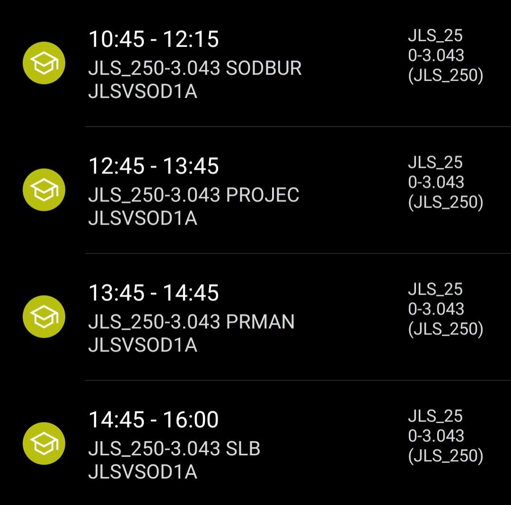
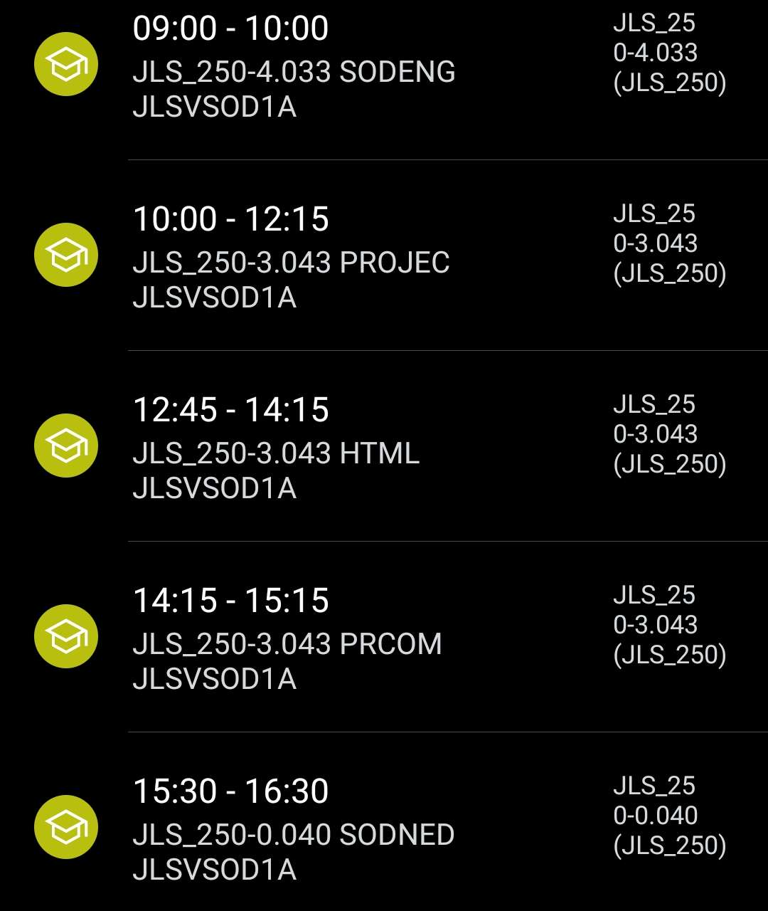
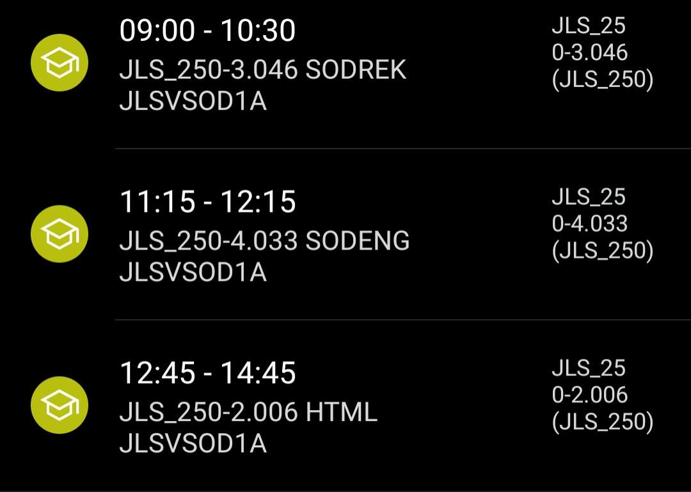
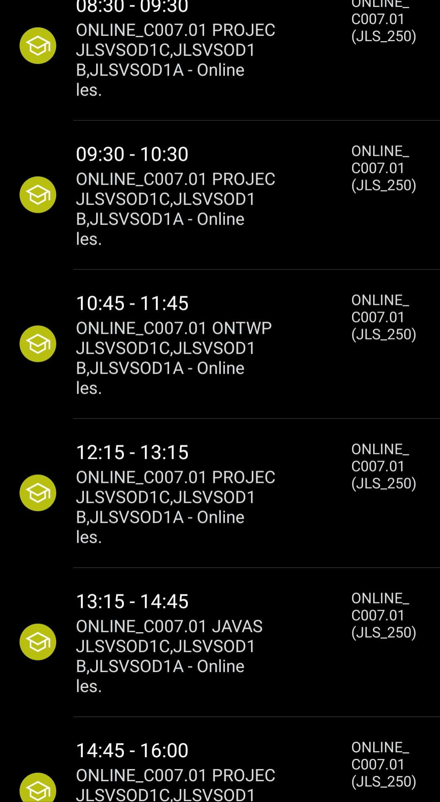
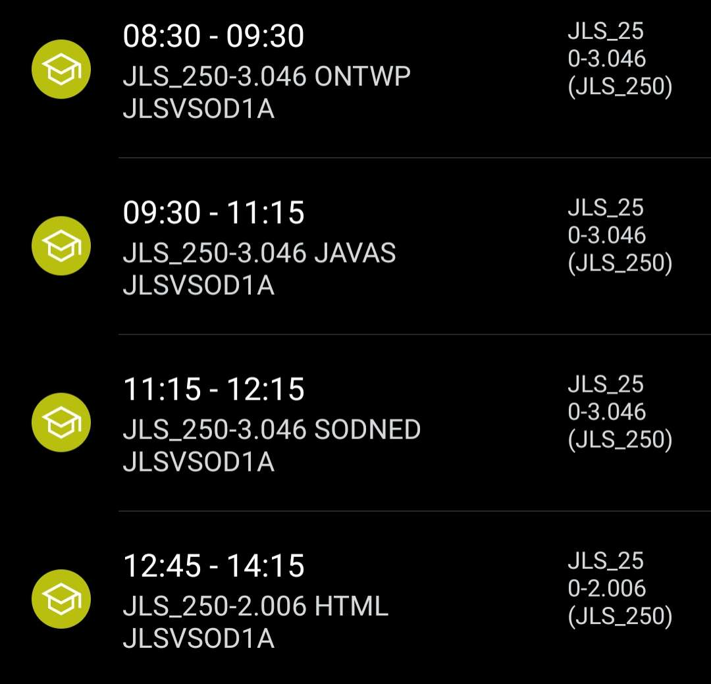
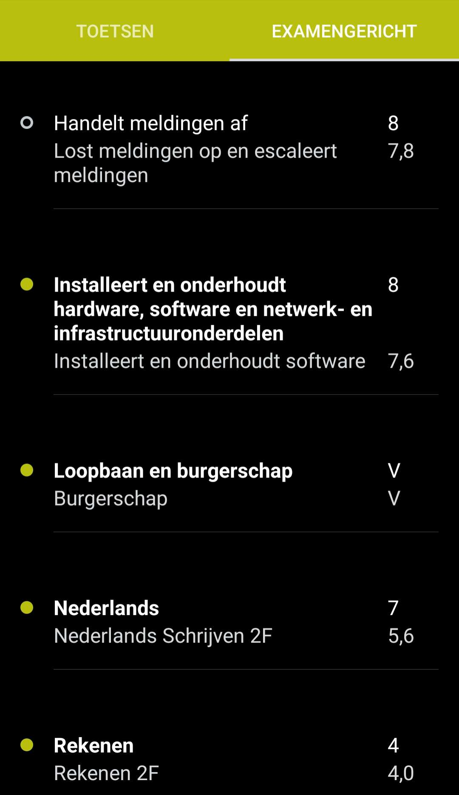
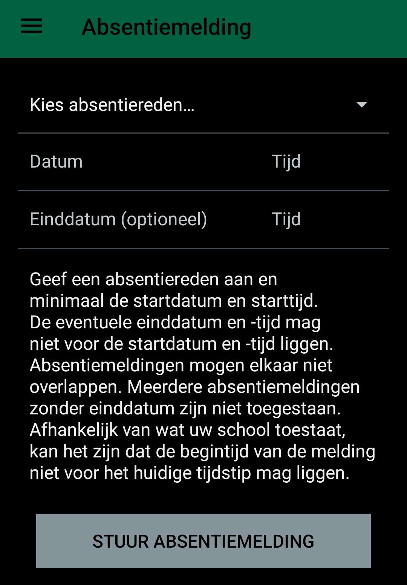
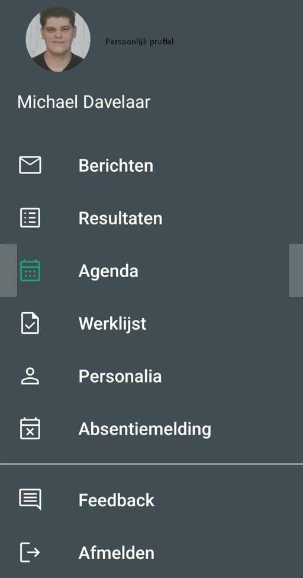

Eduarte is een app waar je je rooster, cijfers en aanwezigheid kan zien.
Je kan het vergelijken met somtoday of magister.
Ik ga het hebben over:
Maandag
Dinsdag
Woensdag
Donderdag
Vrijdag
Dit is het rooster wat wij momenteel hebben (29/09/2023).
Soms kunnen er lessen uit vallen, en dan word de les weg gehaald van het rooster voor die dag.
Cijfers worden (nu) gegeven via canvas per opdracht, maar sommige worden nogsteeds op Eduarte gegeven, de mobiele app.
Hier onder een voorbeeld van hoe wij de cijfers zien:
Overzicht van cijfers
Dit is hoe cijfers er bij ons uit zien op Eduarte.
Als je bijvoorbeeld op Nederlands klikt, zie je al je Examencijfers in 1.
Je kan ook bijvoorbeeld een G, OV of V krijgen.
Je aanwezigheid word genoteerd bij de leraren.
Als je je ziek wilt melden, kan je dat op de app doen bij "Absentiemelding" op de app.
Absentiemelding
Hier kan je jezelf ziekmelden Als je 18+ ben.
Als je onder de 18 ben, moeten je ouders ziekmelden door school te bellen.
In de app kan je (bijna) alles zien. Alles wat hierboven staat is te zien in de app.
Er is ook een balk met meerdere dingen. Deze komt tevoorschijn als je naar rechts swiped.
Eduarte-app navigatie balk
Hier onder een korte uitleg over wat alles in houd:
Hier komen berichten zoals tevaak te laat of tevaak ziek.
Hier komen alle resultaten te staan, zoals toetscijfers of examencijfers.
Hier staat alle informatie over je schooldagen in. Als er wat uit valt, komt deze verandering ook hier te staan.
Hier hoort eigenlijk huiswerk te komen staan, maar dit word niet vaak meer gebruikt. Hier word canvas nu voor gebruikt.
Hier staan al jouw informatie zoals naam, geboortedatum, email, telefoonnummer, ect. (Handig voor administratie).
Zoals hierboven al uitgelegd ook is, hier kan je je absent melden als je 18+ ben.
Dit is gewoon om feedback over de app te geven.
Als je hier op klikt word je afgemeld van de app.